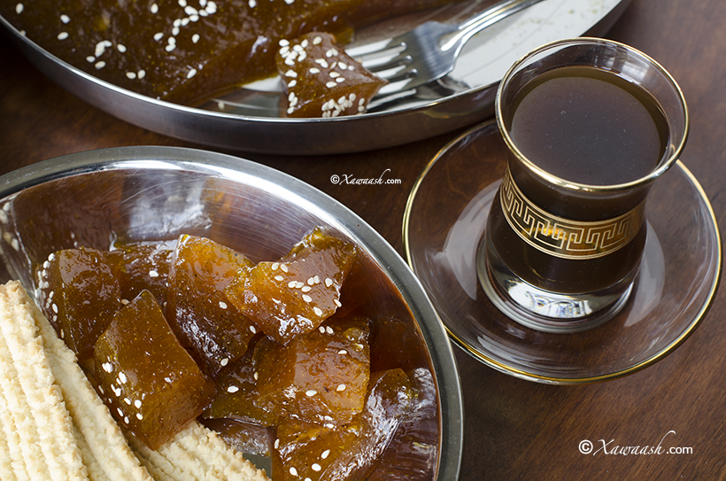

Halwad

Description
Widely considered the Somali desert, Halwad (Somali: Xalwad) is made from cornstarch, spices, and sometimes nuts.
It is a popular desert choice for family gatherings, weddings, and other joyous occassions.
Ingredients
- 5 cups (1 kg) Granulated white sugar
- 5 cups (1.25 litres) Water
- 1 Tbsp (15 mL) Lemon juice
- ¼ cup (62 mL) Unsalted butter
- 2 Tbsp (32.5 mL) Cardamom (ground)/li>
- ½ tsp Cardamom (ground) – For butter mix
- 1 Tbsp (17.5 mL) Nutmeg (ground)
- ½ tsp Nutmeg (ground) – For butter mix
- 1 cup (130 g) Corn starch – (UK: cornflour)
- ¼ tsp (1.25 mL) Food colouring – Egg yellow
- 1 cup (250 mL) Water – For corn starch mixture
- 1¼ cups (375 mL) Canola oil – Or vegetable oil
- 1 cup (145 g) Peanuts (toasted) – Optional
Steps
- Combine the cornstarch, food colour and the 1 cup water. Mix well.
- In a 8-litre pot, combine the sugar, water, and lemom juice. Bring to a boil using medium-high heat.
- Stir in the corn starch mixture. The cooking time for the halwa is 45 minutes starting from now.
- Cover to avoid spattering. Cook for 5 minutes.
- After 5 minutes, add the oil all at once and stir well. Cover and cook for another 5 minutes. Afterwards, uncover and stir every 5 minutes.
- Half an hour after adding the corn starch mixture, add the cardamom and nutmeg.
- Stir well. Stir continuously for the remaining 15 minutes.
- Using a ladle, remove any extra oil then add the browned butter. The browned butter should be added in the last 5 minutes.
- Add the peanuts, if using, then stir well and turn off the heat. The total cooking time is 45 minutes or when the temperature of the halwa reaches 230°F/110°C. If you do not have a thermometer, do a cold-water test. Using a spoon, take a little of the halwa and dip the spoon in cold water. The halwa should not be sticky and should have a soft, rubbery consistency.